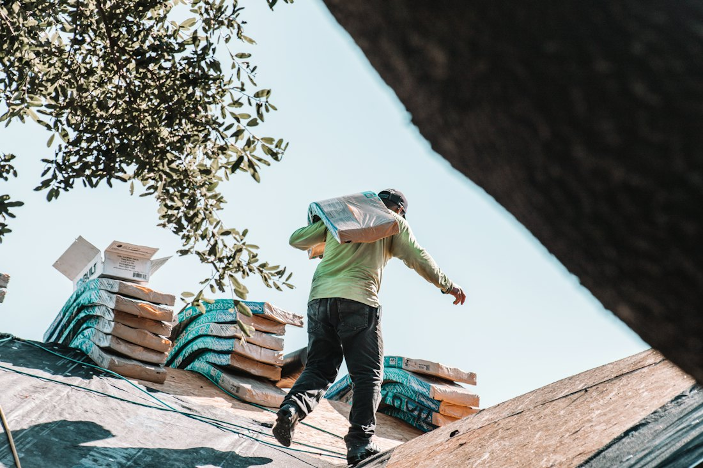
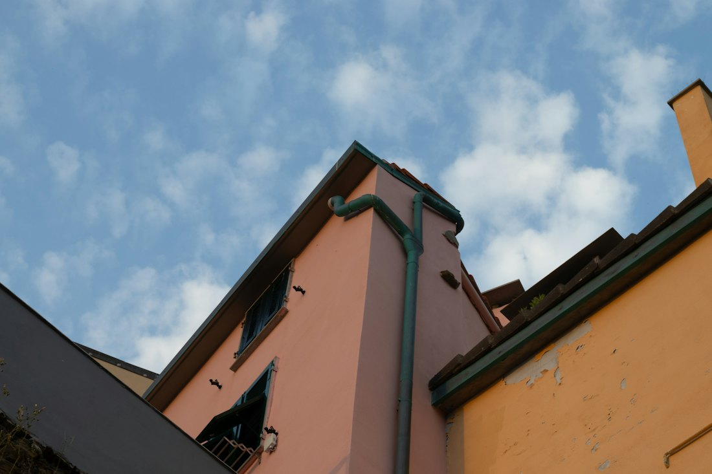
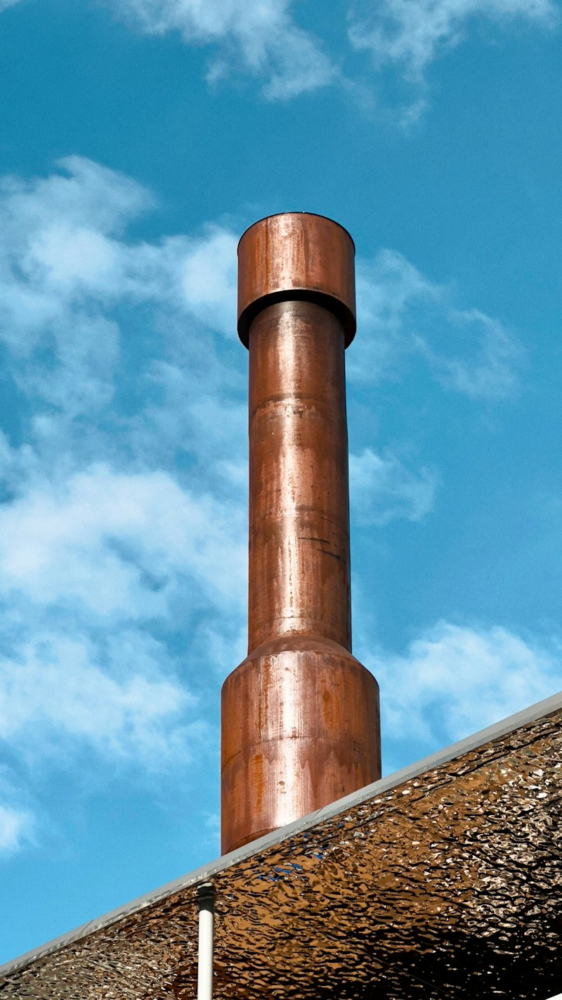
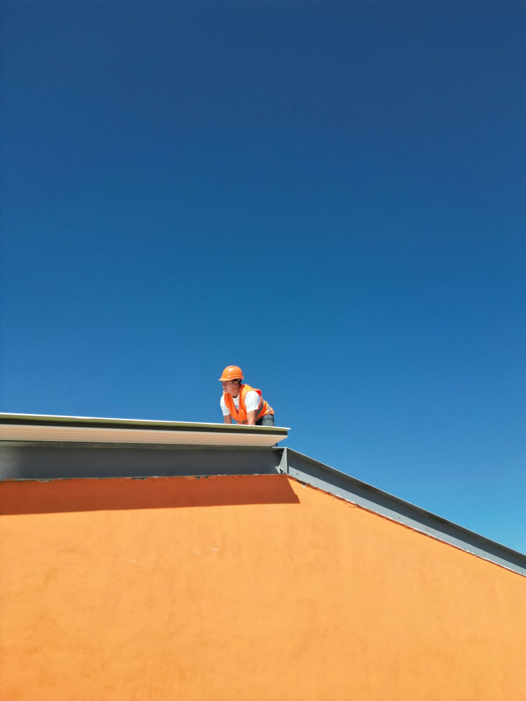

Lattoniere · Rifacimento tetti · Modena
T&CLattoniere.
Tetti rifatti, grondaie e pluviali, impermeabilizzazioni. Il lavoro di Tindaro Ardiri, a Modena.
- 5,0 su Google, 5 recensioni
- Ditta iscritta dal 2013
- Strada Albareto 96, Modena
- Preventivi anche online
- Lavori in loco
Servizi
Tutto quello che sta sopra la vostra testa.
Dal tetto da rifare alla grondaia che perde: un solo lattoniere, un solo numero.
-
01
Rifacimento tetti
Il tetto smontato e rifatto: struttura, guaina, isolamento, coppi o tegole.
-
02
Lattoneria
Grondaie, pluviali, scossaline e converse, su misura per la vostra casa.
-
03
Impermeabilizzazioni
Guaine e trattamenti per tetti, terrazzi e coperture che fanno passare l'acqua.

-
04
Pulizia grondaie
Foglie e sporco tolti prima delle piogge, per evitare tracimazioni e infiltrazioni.

Il tetto
Strato per strato.
07Lattoneria: grondaia, pluviale e scossalina portano via l'acqua.
Lavori
Il mestiere, in foto.
Qui andranno le foto dei vostri tetti a Modena, prima e dopo.


Chi siamo
Tindaro Ardiri, lattoniere.
T&C è la ditta di Tindaro Ardiri, iscritta alla Camera di Commercio di Modena dal 2013. Lavora su tetti, grondaie e coperture a Modena. Per un preventivo basta chiamare il 328 356 0974.
Il sopralluogo si fa in loco, sul tetto. Per una prima idea del lavoro basta mandare due foto su WhatsApp.
Professionali, puntuali e soprattutto onesti. Grazie per il servizio.
Come funziona
Dalla foto al tetto finito.
- 1
Foto su WhatsApp
Ci mandate il problema: una macchia, una grondaia, il tetto intero.
- 2
Sopralluogo
Saliamo a vedere e capiamo da dove passa l'acqua.
- 3
Preventivo
Lavori e materiali scritti, prima di cominciare.
- 4
Lavoro finito
Tetto sistemato, grondaie libere, cantiere pulito.
Contatti
Una macchia sul soffitto? Chiamate prima che piova.
- Telefono e WhatsApp328 356 0974
- SedeStrada Albareto 96, 41122 Modena